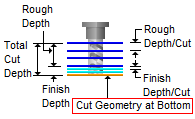
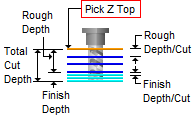
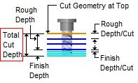
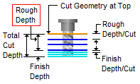

The following Cut parameters tab allows you to control the cutter during the Saw Cutting operation. Here you can set the global tolerance for the operation as well as depth direction and controls.
Saw Cutting, 2½ Axis |
Dialog Box: Cut Levels tab, MILL Operations |
Tolerance This is the allowable deviation from the actual part geometry plus the Stock allowance (if any). In 2 Axis methods, this Tolerance is applied to XY motions only.  Tolerance
|

Climb Select Climb (Down Cut) and the tool will be maintained in a downward motion into the stock. ") Climb (Down Cut) Conventional Select Conventional (Up Cut) and the direction of the tool will be maintained in an upward motion out of the stock. ") Conventional (Up Cut) |
Left of Curves / Right of Curves Use these parameters to determine which side of the control geometry curve to place the saw tool axis. Saw Cut Side (Left/Right of Control Geometry Curves |
These parameters control the position of the saw face in relation to the computed toolpath. In the illustration below you see that the saw tool has a Top, a Bottom, and a Center. Selecting an option will move the saw tool along its axis to the desired location relative to the computed toolpath. If you are unsure, try each parameter, generate and simulate the toolpath. Saw Face Location (Bottom / Top / Center)
|
Saw Center Use this option if you want the center of the saw to extend to the end of the control curve. Note: Using this option with closed slot cuts will cause the tool to cut past the end of the control curve as shown in the illustrations below. Cut Extents = Saw Center Saw Contact Use this option when cutting a closed slot. This option will adjust the cut distance to honor the contact point of the blade and the end of the slot. Note: When using this option you must enter a Total Cut Depth greater than zero. This depth is used to calculate the contact point. Refer to the illustrations below. Cut Extents = Saw Contact |
The Location of Cut Geometry can be set to At Top (top Z level), At Bottom (bottom Z level) or Pick Top (specifying the Z location) by entering a Z value location or by selecting the pick At Top This tells the system to use the Control Geometry's Z location as the top of the cut. The generated cuts will start at this location and cut down in Z.
At Bottom This tells the system to use the Control Geometry's Z location as the bottom of the cut. The generated cuts will end at this depth.  Pick Top
 Pick Top |

The Cut Depth Control section provides controls for defining the depth of the cut. First define the Total Cut Depth. Then, enter the Rough Depth and Finish Depth values. You can then define the Depth per Cut for both Rough and Finish passes by entering values. Total Cut Depth Enter the Total Cut Depth or select the Pick button and select two points on your part. The depth will be calculated automatically and added to this dialog. Refer to the illustration below for reference. You can then divide this into a Rough Depth and Finish Depth.  Total Cut Depth Rough Depth The Total Cut Depth can be divided into a Rough Depth and a Finish Depth. Enter the Rough Depth here. Refer to the illustration below for reference.  Rough Depth Finish Depth The Total Cut Depth can be divided into a Rough Depth and a Finish Depth. Enter the Finish Depth here. Refer to the illustration below for reference.  Finish Depth Rough Depth/Cut The Rough Depth can be divided into a multiple depths. Enter the Rough Depth/Cut here.  Rough Depth/Cut Select this icon to assign the Cut Depth value that is defined by the tool that is currently active for this operation. Note: This icon will ONLY appear in this dialog if the currently active tool has a Cut Depth value assigned to it. Edit the tool definition if desired. Finish Depth/Cut The Finish Depth can also be divided into a multiple depths. Enter the Finish Depth/Cut here.  Finish Depth/Cut Select this icon to assign the Cut Depth value that is defined by the tool that is currently active for this operation. Note: This icon will ONLY appear in this dialog if the currently active tool has a Cut Depth value assigned to it. Edit the tool definition if desired. |